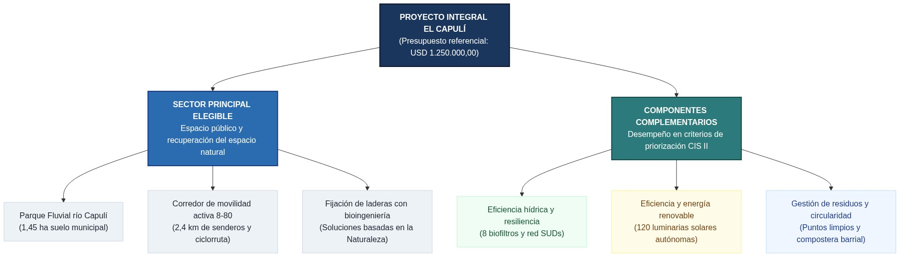
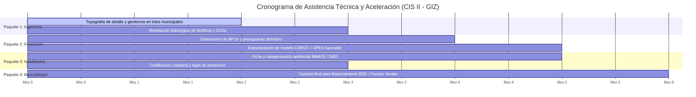

EXPEDIENTE TÉCNICO Y PERFIL DE PROYECTO: PARQUE FLUVIAL Y RED DE CONECTIVIDAD ECOLÓGICA EL CAPULÍ
Regeneración Urbana, Resiliencia Hídrica y Espacio Público Sostenible — Convocatoria Ciudades que Transforman (GIZ / CIS II)
Ficha de Proyecto y Resumen Ejecutivo
El presente expediente técnico fundamenta la postulación del Cantón Loja a la convocatoria Ciudades que Transforman (CIS II / GIZ), aplicando los estándares de perfiles climáticos urbanos (Rosero, 2024) y los criterios de diseño de espacio público del Ministerio de Desarrollo Urbano y Vivienda junto con la Cooperación Alemana (GIZ Ecuador & Ministerio de Desarrollo Urbano y Vivienda, 2021).
| Parámetro Institucional | Especificación Técnica Verificable |
|---|---|
| Nombre del Proyecto: | Parque Fluvial y Red de Conectividad Ecológica El Capulí: Regeneración Urbana, Resiliencia Hídrica y Espacio Público Sostenible |
| Entidad Postulante: | Gobierno Autónomo Descentralizado Municipal del Cantón Loja (GAD Loja) |
| Equipo Técnico Formulador: | Universidad Nacional de Loja (UNL), Carreras de Economía y Arquitectura Sostenible |
| Localización Político-Administrativa: | Ecuador, Provincia de Loja, Cantón Loja, Parroquia Punzara, Barrio El Capulí |
| Coordenadas y Polígono Oficial: | Proyección EPSG:32717 (UTM 17S). Centroide: \(X=700.420\), \(Y=9.551.855\) (\(-4,0524^\circ\), \(-79,1947^\circ\)). Base: Barrio_El_Capuli.gpkg |
| Superficie del Polígono Barrial: | 115,12 hectáreas (\(1.151.178,11 \text{ m}^2\)) |
| Suelo Municipal para Intervención Directa: | 2,14 hectáreas públicas (Predios rurales ID 905 de 1,45 ha, ID 908 de 0,50 ha y predio urbano 1101020202110024 de 0,13 ha) |
| Red Vial Pública a Intervenir: | 9,64 km lineales (44 tramos viales municipales: 1,09 km en tierra, 2,37 km en lastre, fajas de servidumbre y pasos peatonales) |
| Sector Elegible Principal: | Espacio público y recuperación del espacio natural (Bases CIS II, p. 11) |
| Ejes Complementarios Integrados: | Eficiencia hídrica y resiliencia climática (SUDs), movilidad activa no motorizada, iluminación fotovoltaica autónoma y compostaje barrial |
| Población Beneficiaria Directa: | 245 edificaciones censales registradas (CPV INEC 2022); 980 habitantes residentes |
| Población Beneficiaria Indirecta: | 15.000 usuarios del cuadrante sur (Campus Universitario La Argelia, unidades educativas y parroquia Punzara) |
| Inversión Referencial (CAPEX): | USD 1.250.000,00 |
| Nivel de Madurez: | Etapa de Preparación (Nivel Perfil con catastro municipal, cartografía georreferenciada y diagnóstico censal) |
Justificación Territorial y Diagnóstico de Necesidades
Alineación con la Planificación Cantonal y Nacional
La intervención se desprende de tres instrumentos de planificación vinculantes a nivel nacional y local:
Plan de Desarrollo y Ordenamiento Territorial de Loja (Gobierno Autónomo Descentralizado Municipal del Cantón Loja, 2021a): El diagnóstico cantonal identifica a la parroquia Punzara como un área de expansión periférica deficitaria en drenaje pluvial, con discontinuidad vial y carencia de parques urbanos. La intervención aplica las directrices del Eje Loja Habitable y Sostenible para mitigar la segregación espacial periurbana y consolidar la infraestructura verde en bordes fluviales.
Plan del Sistema Verde Urbano de Loja (Gobierno Autónomo Descentralizado Municipal del Cantón Loja, 2021b): El instrumento clasifica el área dentro del Eje 1 (Red Verde Urbana), subprograma de Parques Urbanos, jerarquizando formalmente el Proyecto N° 11: Parque de río Capulí en el Subsistema 3 con una valoración técnica multicriterio de 0,491 sobre variables de cambio climático, dinamización socioeconómica y justicia espacial. El plan define la Av. Ruta Éxodo de Yangana como Conector Artificial Primario (Corredor Verde) para integrar movilidad activa con la red hídrica, y la Av. Reinaldo Espinosa como conector socio-ecológico articulador entre el nodo universitario La Argelia, el Parque Capulí y el Bioparque Punzara.
Agenda de Hábitat Sostenible del Ecuador 2036 (MIDUVI, 2020) y Objetivos de Desarrollo Sostenible: El proyecto operacionaliza cuatro áreas de gestión prioritarias establecidas en la política nacional de hábitat del Ministerio de Desarrollo Urbano y Vivienda:
- Área de Gestión 1 (Servicios públicos, equipamientos e infraestructura): Implementación de la regla de proximidad 3-30-300 del estándar nacional (GIZ Ecuador & Ministerio de Desarrollo Urbano y Vivienda, 2021), garantizando que cada habitante cuente con al menos tres árboles a la vista, 30% de cobertura de copa en el barrio y un parque público de calidad a menos de 300 metros (ODS 11, Meta 11.7).
- Área de Gestión 3 (Sistemas de movilidad y transporte sostenible): Consolidación de 2,4 km de calle completa y pacificación vial con estándar universal 8-80, habilitando la ciclorruta y aceras continuas hacia el Campus Universitario La Argelia (ODS 3, Meta 3.6).
- Área de Gestión 5 (Conservación ambiental y gestión de recursos): Restauración de la ribera fluvial mediante Soluciones basadas en la Naturaleza (SbN), fijación vegetal de taludes y tres islas comunitarias de economía circular y compostaje barrial (ODS 12, Meta 12.5).
- Área de Gestión 6 (Gestión de riesgos, resiliencia y cambio climático): Mitigación de riesgos hidro-geomorfológicos mediante ocho celdas de drenaje urbano sostenible (SUDs) que retienen y laminan \(1.850 \text{ m}^3\) de escorrentía superficial durante eventos de precipitación extrema (ODS 6, Meta 6.6 y ODS 13, Meta 13.1).
Caracterización Socioeconómica y Brechas Físicas
Los datos oficiales del Censo de Población y Vivienda (Instituto Nacional de Estadística y Censos, 2022) y el levantamiento georreferenciado municipal identifican fallas estructurales críticas en el polígono barrial de 115,12 hectáreas:
- Vulnerabilidad socioeconómica y habitacional: En el Barrio El Capulí habitan 980 personas residentes en 245 edificaciones censales. El 38,4% de los hogares registra Necesidades Básicas Insatisfechas (NBI). Más del 80% de los predios carece de red de alcantarillado pluvial, originando que el 72% de las aguas pluviales escurra de manera superficial erosionando calzadas y taludes habitados.
- Inestabilidad morfodinámica y riesgo hidrogeológico: La topografía de ladera presenta pendientes pronunciadas de entre el 15% y el 35%. La Dirección de Gestión de Riesgos y el catastro municipal clasifican las laderas y márgenes ribereños bajo niveles de susceptibilidad geomorfológica media y alta (categorías 02 y 03 por socavamiento fluvial y saturación del estrato limoso-arcilloso).
- Precariedad de la red vial y movilidad no motorizada: De los 9,64 km lineales de vías públicas registradas en el catastro barrial, 1,09 km son calzadas de tierra compactada y 2,37 km son calzadas de lastre sin cunetas ni veredas peatonales. A pesar de que la distancia hacia el nodo equipamental de La Argelia es inferior a 2.000 metros, la falta de continuidad peatonal obliga a circular por la calzada vehicular, afectando severamente a estudiantes, infancias, adultos mayores y mujeres en tareas de cuidado.
Propuesta Técnica del Anteproyecto
El proyecto adopta como sector estructurante el espacio público y la conservación de márgenes naturales, incorporando cuatro componentes complementarios para maximizar el desempeño en la matriz de priorización del CIS II (GIZ Ecuador & Ministerio de Desarrollo Urbano y Vivienda, 2021; GIZ & European Investment Bank, 2020).

Componente 1: Parque Fluvial y Soluciones basadas en la Naturaleza (SbN)
- Emplazamiento: Predios municipales rurales ID 905 (\(14.516,75 \text{ m}^2\)) e ID 908 (\(4.996,82 \text{ m}^2\)), colindantes con el cauce del río Capulí.
- Diseño funcional multifuncional: Cumple la directriz MIT/GIZ (GIZ Ecuador & Ministerio de Desarrollo Urbano y Vivienda, 2021) de generar servicios ecosistémicos verificables por metro cuadrado. Integra estabilización de riberas con vegetación nativa de raíces profundas, terraceo de retención biológica, plazoletas de estancia y pasarelas peatonales permeables. Se utilizan materiales de baja huella de carbono y mampostería en piedra local.
Componente 2: Movilidad Activa y Vía Completa de Proximidad
- Trazado: Intervención en 2,4 km de calzadas municipales sin consolidar (
muni_vialidad_capuli), articulando el circuito con los conectores primarios de la Av. Reinaldo Espinosa y la Ruta Éxodo de Yangana (Gobierno Autónomo Descentralizado Municipal del Cantón Loja, 2021b). - Estándar: Aceras peatonales continuas de estándar universal 8-80, ciclorruta segregada, pacificación del tráfico rodado y alcorques drenantes de infiltración directa.
Componente 3: Eficiencia Hídrica y Drenaje Urbano Sostenible (SUDs)
- Infraestructura de agua visible: Siguiendo la normativa MIT/GIZ (GIZ Ecuador & Ministerio de Desarrollo Urbano y Vivienda, 2021), el drenaje no se oculta en tuberías ciegas sino que opera en superficie mediante ocho celdas de biorretención, jardines de lluvia, cunetas vegetadas y disipadores de energía con trampas de sedimentos accesibles.
- Función hidrológica: Restituye la capacidad de infiltración del terreno (efecto esponja), reduciendo el pico de escorrentía superficial hacia el cauce del río Capulí y eliminando anegamientos en las manzanas bajas.
Componente 4: Alumbrado Eficiente y Generación Fotovoltaica
- Infraestructura energética: Instalación de 120 luminarias solares LED autónomas de 60W con panel monocristalino integrado y batería de litio LiFePO4. La red opera al 100% fuera de la red eléctrica cantonal, reduciendo el gasto corriente del municipio.
Componente 5: Gestión de Residuos Sólidos y Circularidad
- Equipamiento ambiental: Tres puntos limpios comunitarios semisoterrados de tres fracciones (reciclables, no reciclables y especiales) y un centro barrial de compostaje para procesar biomasa vegetal generada en el mantenimiento de las áreas verdes.
Estructura Presupuestaria de Inversión y Operación (CAPEX + OPEX)
El expediente técnico evalúa la viabilidad económica en el ciclo de vida completo de la infraestructura conforme al marco FELICITY (GIZ & European Investment Bank, 2020) y la guía de espacio público (GIZ Ecuador & Ministerio de Desarrollo Urbano y Vivienda, 2021).
Presupuesto de Inversión Inicial (CAPEX)
El monto total de inversión de capital asciende a USD 1.250.000,00, distribuido en seis rubros de intervención:
| Código | Componente de Inversión | Meta Física Cuantificable | Presupuesto (USD) | Participación |
|---|---|---|---|---|
| C1 | Parque Fluvial Capulí y bioingeniería ribereña | \(19.513 \text{ m}^2\) regenerados y equipados | \(520.000,00\) | 41,6% |
| C2 | Vías completas, ciclorrutas y aceras accesibles | \(2,4 \text{ km}\) lineales intervenidos | \(310.000,00\) | 24,8% |
| C3 | Red de drenaje urbano sostenible (SUDs) | 8 biofiltros y zanjas de infiltración | \(185.000,00\) | 14,8% |
| C4 | Alumbrado público solar fotovoltaico | 120 luminarias solares autónomas | \(95.000,00\) | 7,6% |
| C5 | Puntos limpios y compostera comunitaria | 3 islas ecológicas y módulo de compostaje | \(50.000,00\) | 4,0% |
| C6 | Medidas de mitigación ambiental y fiscalización | Plan de manejo ambiental y control de obra | \(90.000,00\) | 7,2% |
| TOTAL | Inversión de Capital Estimada (CAPEX): | Intervención Integral Barrial | \(1.250.000,00\) | 100,0% |
Los costos unitarios toman como referencia los rendimientos de obra del PDOT de Loja (Gobierno Autónomo Descentralizado Municipal del Cantón Loja, 2021a). La asistencia técnica de aceleración no requiere contraparte financiera al GAD Loja durante la fase de formulación.
Estimación de Costos de Operación y Mantenimiento (OPEX)
Para garantizar la sostenibilidad a 25 años y evitar el abandono de los activos, se proyecta el gasto recurrente anual estimado:
| Actividad de Mantenimiento | Frecuencia | Responsable Operativo | Costo Anual Estimado (USD) |
|---|---|---|---|
| Limpieza de sedimentadores y trampas en biofiltros SUDs | Mensual y post-lluvia | GAD Loja (Obras Públicas / UMAPAL) | \(4.800,00\) |
| Poda, riego y reposición de especies vegetales nativas | Bimensual | GAD Loja (Gestión Ambiental) + Junta Barrial | \(6.200,00\) |
| Mantenimiento de luminarias solares e inversores/baterías | Semestral | GAD Loja (Electricidad) | \(3.500,00\) |
| Gestión del centro de compostaje barrial y recolección | Semanal | Junta Barrial El Capulí + Gestión Ambiental | \(2.400,00\) |
| TOTAL OPEX ANUAL: | Operación recurrente del sistema | Modelo de co-gestión municipal-comunitaria | \(16.900,00\) |
El costo de operación anual representa apenas el 1,35% del CAPEX, constituyendo un sistema financiero de bajo costo recurrente para el municipio debido al alumbrado autónomo fuera de red y al drenaje biofísico pasivo por gravedad.
Modelo de Gobernanza y Gestión Operativa
Coordinación Institucional
El modelo operativo distribuye responsabilidades entre tres actores:
Titular del proyecto (GAD Municipal del Cantón Loja): Postulante formal y receptor de la asistencia técnica de la GIZ. Designa el equipo contraparte en las Direcciones de Planificación, Obras Públicas y Gestión Ambiental. Asume la titularidad del activo público y su posterior mantenimiento.
Equipo formulador (Universidad Nacional de Loja): Las Carreras de Economía y Arquitectura Sostenible elaboran el perfil técnico, procesan los microdatos territoriales en KoBoToolbox (Kobo, Inc., 2024), desarrollan la cartografía en QGIS y estructuran la evaluación socioeconómica bajo el marco de prácticas preprofesionales (Universidad Nacional de Loja, 2024).
Contraparte social (Junta de Desarrollo Barrial El Capulí): Participa mediante el mecanismo de planificación barrial participativa (GAD Municipal de Loja & Universidad Nacional de Loja, 2020; Universidad Nacional de Loja, 2022). Valida el diseño en asambleas comunitarias y co-administra las áreas verdes mediante convenios barriales de cuidado del espacio público.
Desempeño Climático, Salvaguardas y Ruta de Aceleración GIZ
El presente capítulo operacionaliza los criterios de priorización de la convocatoria CIS II (GIZ Ecuador & GFA Consulting Group, 2026; Rosero, 2024), cuantificando el impacto biofísico, gestionando los riesgos de ejecución y trazando la asistencia técnica requerida.
Matriz de Cumplimiento de Criterios de Selección y Priorización CIS II
Conforme a las bases de la convocatoria Ciudades que Transforman (GIZ Ecuador & GFA Consulting Group, 2026), la propuesta cumple y desarrolla los catorce criterios de priorización técnica, desempeño y riesgo de ejecución:
| N.° | Criterio de Selección CIS II | Nivel de Cumplimiento | Evidencia Técnica Documentada en Expediente |
|---|---|---|---|
| 01 | Elegibilidad territorial (ciudad intermedia) | Cumple | Cantón Loja registra 249.658 habitantes (Censo CPV INEC 2022), dentro del rango de 30.000 a 1.000.000 hab. |
| 02 | Sector elegible principal | Cumple | Espacio público y recuperación del espacio natural (19.513 m² en ribera fluvial del río Capulí). |
| 03 | Adicionalidad multisectorial integrada | Cumple | Integra 4 sectores complementarios: energía solar, drenaje urbano sostenible (SUDs), movilidad activa y residuos. |
| 04 | Monto de inversión referencial | Cumple | Presupuesto referencial de USD 1.250.000,00 estructurado bajo metodología CAPEX + OPEX bancable. |
| 05 | Titularidad y dominio del suelo | Cumple | 2,14 ha de suelo municipal directo (predios rurales ID 905 e ID 908) colindantes al margen hídrico. |
| 06 | Compromiso de máxima autoridad | Cumple | Carta de compromiso suscrita por la Alcaldía del Cantón Loja para liderar la postulación formal. |
| 07 | Equipo contraparte técnica asignado | Cumple | Equipo municipal interdisciplinario (Planificación, Obras Públicas, Gestión Ambiental) articulado a la UNL. |
| 08 | Alineación con planificación local | Cumple | Incorporado en el PDOT Loja 2021 y priorizado como Proyecto N.° 11 en el Plan del Sistema Verde Urbano. |
| 09 | Alineación con política nacional | Cumple | Articulado a la Agenda de Hábitat Sostenible del Ecuador 2036 (Áreas de Gestión 1, 3, 5 y 6) y ODS 11. |
| 10 | Mitigación y resiliencia climática | Cumple | Capacidad de laminación de 1.850 m³ de escorrentía pluvial y ahorro de 14,2 tCO2e/año con 120 luminarias solares. |
| 11 | Enfoque de género y accesibilidad universal | Cumple | Diseño vial peatonal inclusivo bajo estándar 8-80 para infancias, adultos mayores y movilidad del cuidado. |
| 12 | Co-gobernanza y participación comunitaria | Cumple | Participación y corresponsabilidad operativa acordada con la Junta de Desarrollo Barrial El Capulí. |
| 13 | Sostenibilidad financiera de operación | Cumple | Costo OPEX anual de USD 16.900,00 (1,35% del CAPEX), financiado con ahorro energético fuera de red. |
| 14 | Madurez y ruta crítica de asistencia técnica | Cumple | Nivel de perfil avanzado con catastro georreferenciado y ruta de maduración de 6 meses hacia financiamiento BDE. |
Métricas Cuantitativas de Mitigación y Adaptación Climática
El proyecto genera beneficios ecosistémicos medibles que sustentan la calificación técnica de la propuesta:
| Indicador de Desempeño | Línea Base (Sin Proyecto) | Meta con Proyecto | Mecanismo Físico de Verificación |
|---|---|---|---|
| Capacidad de laminación hídrica | \(0 \text{ m}^3\) (escorrentía directa) | \(1.850 \text{ m}^3\) por evento crítico | 8 celdas de biorretención y cunetas verdes para tormentas de \(Q_{24h}\) |
| Restitución de suelo permeable | \(0 \text{ m}^2\) (vías compactadas) | \(14.200 \text{ m}^2\) de suelo vivo | Sustitución de calzadas de tierra por pavimentos permeables y alcorques |
| Reducción de emisiones de GEI | \(14,2 \text{ tCO}_2\text{e/año}\) (red fósil) | \(0 \text{ tCO}_2\text{e/año}\) en alumbrado | 120 luminarias solares autónomas de 60W (ahorro: \(14,2 \text{ tCO}_2\text{e/año}\)) |
| Tratamiento de biomasa urbana | 0% (quema o botadero) | 24 toneladas/año | Centro barrial de compostaje para residuos de poda y huertos |
| Cobertura vegetal nativa de rivera | 15% (borde erosionado) | 85% de margen protegido | Reforestación de 1,2 km de ribera fluvial con especies fijadoras |
Matriz de Riesgos y Salvaguardas Socioambientales
Conforme al marco de salvaguardas de la banca multilateral (Banco de Desarrollo del Ecuador B.P., 2022; GIZ & European Investment Bank, 2020), se identifican las amenazas operativas y sus medidas de control preventivo:
| Categoría de Riesgo | Evento Identificado | Nivel de Riesgo | Medida Preventiva y Mitigación Vinculante |
|---|---|---|---|
| Tenencia y Franjas de Protección | Presión de ocupación privada sobre el margen del río Capulí | Medio | Delimitación topográfica georreferenciada y registro municipal de servidumbre ecológica sobre los lotes 905 y 908. |
| Geotécnico y Erosión | Deslizamiento de taludes durante movimientos de tierra en época lluviosa | Alto | Ejecución de bioingeniería escalonada previa, terraceo con muros vivos y programación de obras civiles en estiaje. |
| Colmatación de Biofiltros | Taponamiento temprano de capas filtrantes por arrastre de sedimentos y basura | Medio | Incorporación de trampas de grasa/arenas de fácil acceso y suscripción de actas de corresponsabilidad con la Junta Barrial. |
| Institucional y Rotación | Discontinuidad técnica por cambios de autoridades seccionales | Bajo | Formalización del proyecto mediante Resolución de Concejo Cantonal y Convenio Marco UNL - GAD Loja. |
Escalabilidad y Replicabilidad en el Cantón Loja
El proyecto trasciende la escala barrial al estructurarse como un modelo tipológico para la red de quebradas y márgenes fluviales del Cantón Loja:
- Prototipo Piloto Cantonal: El Parque Fluvial El Capulí establece la metodología de intervención para los 14 núcleos verdes periurbanos priorizados en el Plan del Sistema Verde Urbano (Gobierno Autónomo Descentralizado Municipal del Cantón Loja, 2021b), particularmente las microcuencas de Shushuayco, San Cayetano y Punzara.
- Estandarización Normativa (Calle Completa Periurbana): Los detalles constructivos de cunetas vegetadas y secciones viales 8-80 se transferirán a la Dirección de Planificación Territorial del GAD Loja para incorporarse como perfiles viales tipo en la actualización del PUGS.
Ruta Crítica de Asistencia Técnica y Aceleración (Horizonte de 6 Meses)
Durante la fase de aceleración del Programa CIS II, el equipo interdisciplinario UNL - GAD Loja focalizará la asistencia técnica en cuatro paquetes de trabajo:

- Meses 1 - 2 (Levantamiento de Precisión): Estudios de mecánica de suelos, topografía LiDAR de la ribera fluvial y modelación hidrológica de escorrentía para dimensionamiento exacto de los 8 biofiltros.
- Meses 3 - 4 (Ingeniería de Detalle y Presupuesto): Elaboración de planos constructivos definitivos, Análisis de Precios Unitarios (APUs) referenciales y pliegos técnicos de contratación.
- Meses 5 - 6 (Viabilidad Ambiental y Bancabilidad): Regularización ambiental cantonal y estructuración del expediente de crédito no reembolsable o mixto ante el Banco de Desarrollo del Ecuador (BDE) y fondos climáticos internacionales.